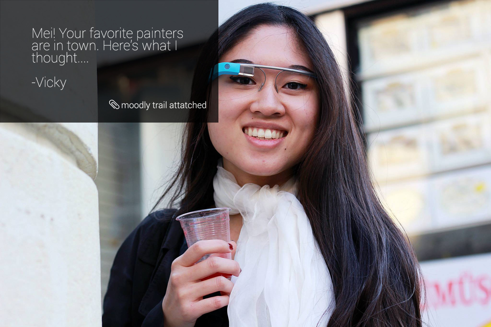
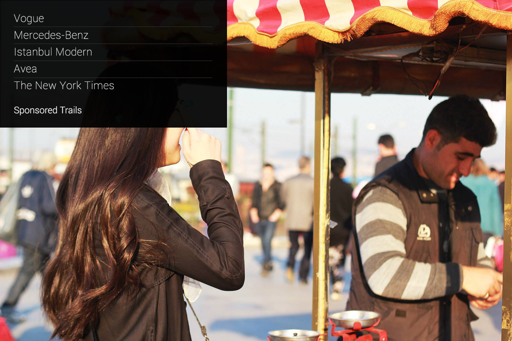
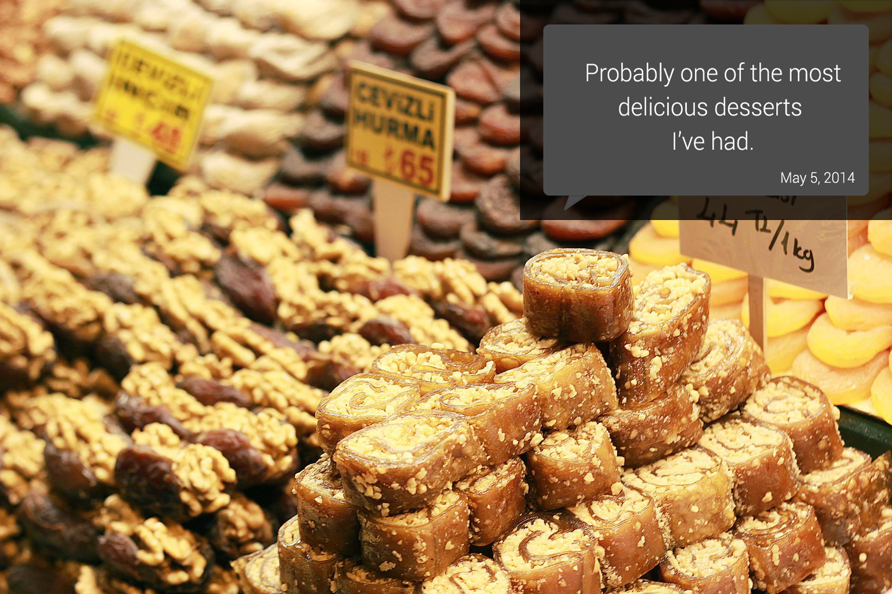
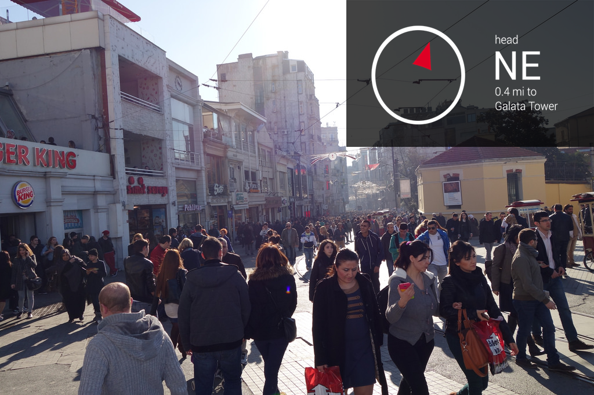
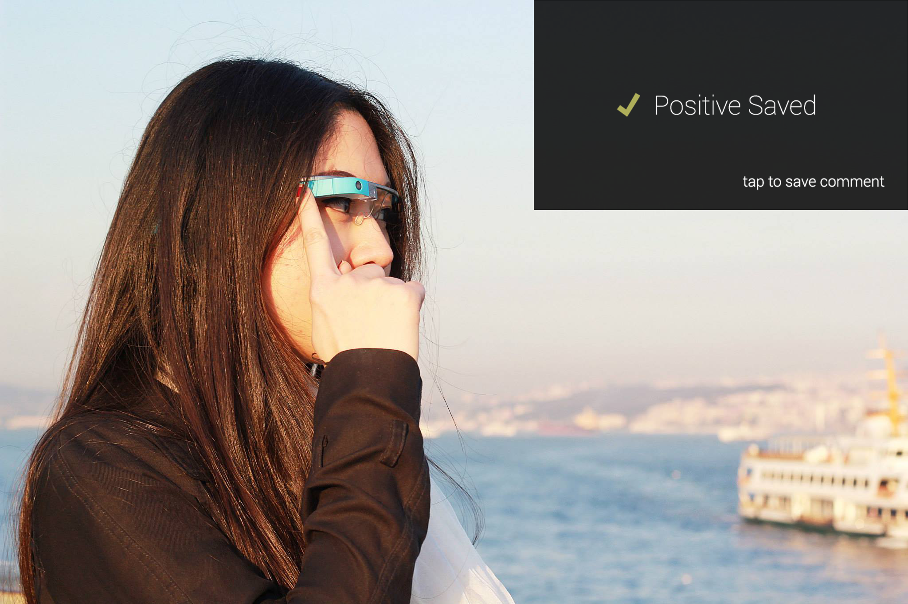
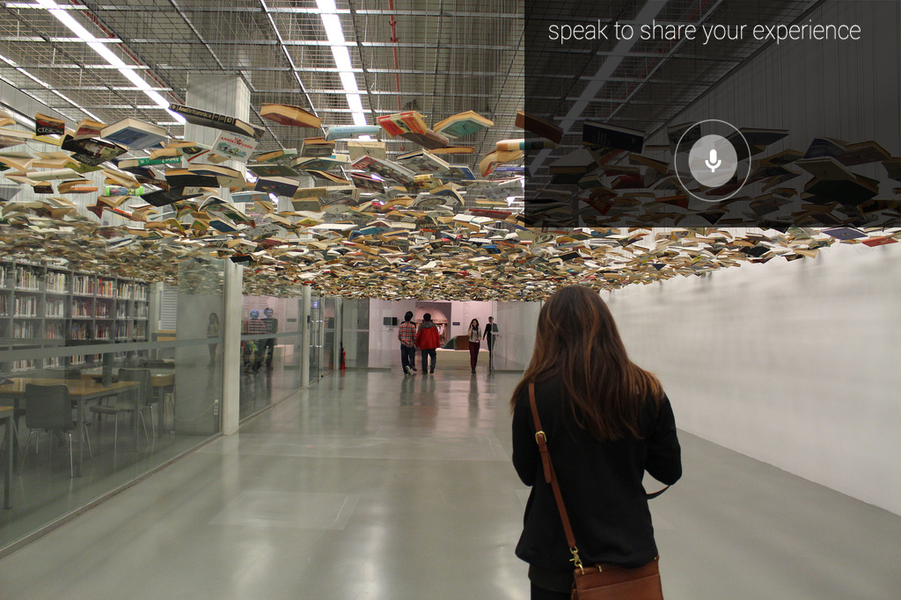

CONCEPT








Moodly is a google glass application that brings a different dimension to exploring museums and urban environments.
Moodly does this by its main concept: Trails.
A trail is a curated path that displays contextual experiences and opinions, with the option to add your own opinions.
It not only allows a person to share their experiences with their friends, but allows people to see into the minds of others.
People can load trails of famous athletes, celebrities or their childhood idols. Then they can follow the path they would have taken in a certain place.
Trails is also a great way to have a unique and different experience in the same environment, thus exploring different aspects of an area.
Moodly does this by its main concept: Trails.
A trail is a curated path that displays contextual experiences and opinions, with the option to add your own opinions.
It not only allows a person to share their experiences with their friends, but allows people to see into the minds of others.
People can load trails of famous athletes, celebrities or their childhood idols. Then they can follow the path they would have taken in a certain place.
Trails is also a great way to have a unique and different experience in the same environment, thus exploring different aspects of an area.